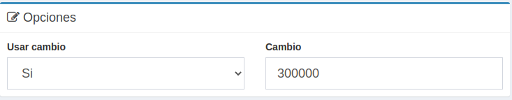

Calculadora Version 1.0
Manual de uso
Muchos negocios utilizan calculadoras convencionales para los calculos de sus ventas diarias lo que puede llevar a equivocaciones que generan perdida de dinero y tiempo.
Por esta razon nace CalculaRiv que permite llevar un registro de las operaciones realizadas, lo que la hace ideal para negocios que no cuentan con un sistema de administracion, ya que muestra una lista con las operaciones dando subtotales al igual que un sistema de ventas.
Configuracion previa
Si te encuentras en un pais en el que se utiliza un tipo de moneda de cambio como en Venezuela, puedes poner en el area de Opciones la de utilizar cambio y colocar el monto de cambio con el que quieras trabajar
Uso
El uso de la calculadora consiste en en el registro de la suma o resta de una cifra o de la multiplicacion de dos cifras.
Sumar o restar una cifra
Para sumar una cifra en la cuenta se teclea la cifra y luego presinar la tecla (+) o enter (=) de este mismo modo para la resta se tiene que presionar el boton de (-)
Como se puede observar en la imagen cuando se resta un numero este se suma en la tabla con un fondo rojo.

Sumar o restar una multiplicacion de numeros
Para sumar una multiplicacion de dos numeros en la cuenta se teclean los dos numeros con el signo de multiplicacion (*) entre ellos (100*100) y luego presinar la tecla (+) o enter (=) de este mismo modo para la resta se tiene que presionar el boton de (-)

Llevar un resumen de totales
Otra opcion que se puede llevar a cabo es llevar una suma de todas las cuentas que se saquen en la calculadora.
Esto con la finalidad de llevar un total de todas las ventas que se hagan en el dia.
Para esto, al momento de tener la cuenta lista se presiona el boton de procesar, que es el boton naranja que aparece en la esquina inferior derecha de la misma.
Despues de procesarlo el monto total de la operacion en proceso se suma a la cifra total del resumen que se encuentra en "Resumen" en la esquina superior derecha de la pantalla

Ejemplo de uso


Fiori HTML Admin Template ─ $49
Fiori is a marvelous, clean and professional solution for admins, based on Bootstrap 4. With its horizontal, flexible and fluent layout, your admin will reshape to any device in an instant. Included in the kit, you will find nine different designs, which you can use as is or improve and adjust further. There are also a whopping two hundred customizable elements, tons of color options, sticky side menu, fixed or static footer and more. Without breaking a single drop of sweat, you can now have an admin panel all set up and ready to go without a hassle, thanks to the amazing Fiori.
900+ purchases